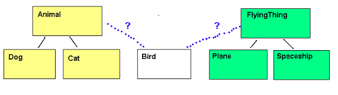

This week we will look at some further Kotlin language features, in particular lambda functions and interfaces.
More on Functions in Kotlin
In Kotlin, functions can be stored in variables and passed as arguments to other functions. In this respect, Kotlin is similar to JavaScript. This property of functions makes them first class (see the Kotlin documentation).
Anonymous Functions
- An anonymous function is a function with no declared name after the fun keyword
- Anonymous functions can be passed in as arguments to another function, or referred to via variables
- Here is a basic example of an anonymous function, referred to by the variable funcReference here:
fun main(args: Array<String>) { val funcReference = fun(i: Int): Int { return i*i*i } println(funcReference(3)) val secondRef = funcReference println(secondRef(4)) } - Note how we set funcReference equal to a function which has one Int parameter, returns Int and calculates and returns the cube of the number
- funcReference is a reference to this anonymous function
- We can use this reference to call the function
- Notice how we can also set up a second reference (secondRef here) to the function, and use that to call it
Passing functions as arguments to other functions
- In Kotlin, we can pass functions as arguments to other functions
- The parameter type for a function passed into another is:
(ParamType1, ParamType2, ParamType3...) -> returnType
where ParamType1, ParamType2, ParamType3 etc. are the parameter types for the function being passed in, and returnType is the return type of that function - This is probably better explained via example, so here is one:
fun main(args: Array<String>) { val cubeFunction = fun(i: Int): Int { return i*i*i } execFunction(cubeFunction) } fun execFunction ( f: (Int) -> Int) { println(f(3)) // call the function passed in with an argument of 3, i.e. the cube of 3 will be calculated }Note that we pass cubeFunction in as an argument to execFunction - The corresponding data type of the parameter, f, is (Int) -> Int, to indicate that the function being passed in takes one Int and returns an Int
- If the function being passed in returns nothing, we specify Unit as the return type, e.g:
fun main(args: Array<String>) { val printStars = fun(i: Int){ for(count in 1..i) { print("*") } print("\n") } execFunction(printStars) } fun execFunction ( f: (Int) -> Unit) { f(3)// call the function passed in with an argument of 3, i.e. three stars will be printed }This time we pass in a function which prints a given number of stars, but does not return anything, hence specifying Unit as the return type of the function passed into execFunction
Lambda functions
- Lambda functions are similar to ordinary anonymous functions but use a special, concise syntax
- Here is the first example rewritten to use a lambda function:
fun main(args: Array<String>) { val cubeLambda: (Int) -> Int = { i -> i*i*i } println(cubeLambda(3)) } - Note how we write a lambda: we enclose the whole function (the parameters as well as the function body) in braces { }, and separate the parameters and the function body with the -> token
- Note how we have to specify the type of the lambda:
val cubeLambda: (Int) -> Int
This is because we do not specify the parameter types in the lambda, therefore we have to specify the type of the variable holding it - We do not need the
returnkeyword: the lambda will automatically returni*i*i - Note how in our case, the lambda only has one statement (i*i*i), but they can
actually have multiple statements, one statement per line; e.g.
val someLambda: (Int) -> Int = { parameter-> statement1 statement2 someValue } - The final statement in a lambda is treated as the return value
- See the Kotlin documentation for more details
Making the lambda more concise - the implicit "it"
- In cases in which a lambda has just one parameter - a common situation - we can refer to that one parameter implicitly using the keyword it
- Thus, we can rewrite the cube example as follows:
fun main(args: Array<String>) { val cubeLambdaWithIt: (Int) -> Int = { it*it*it } println(cubeLambdaWithIt(3)) }Because the it parameter always corresponds to a single argument passed in (3 in this example), and because the value of last statement of a lambda is always returned, it follows that this example will also calculate the cube of the argument passed into the lambda
Real-world use of lambdas
- A very common real-world use of lambdas is to write code in a functional style
- A typical pattern in functional code is to apply a given function to all members of an array, list or map
- This leads to more readable, intuitive code with the details of looping through the collection hidden away
- Collections (lists, maps) have a range of functions (methods) which apply a lamda to some or all members of the collection
- The simplest is forEach(), which applies a lambda to all members of a collection:
fun main(args: Array<String>) { val peopleList = listOf("Mark Cranshaw", "Rob Cooper", "Al Monger", "Mark Udall", "Margaret Jones") peopleList.forEach { person -> println(person) } } - Note how the forEach() method of the list takes a lambda as an argument
- The lambda will be applied to all members of peopleList, with each person in turn being passed into the lambda as the person parameter
- The result, therefore, will be that each person will be printed
- Note also how we can omit the parentheses () when passing in a lambda as the first argument to a function
Question
- How can we make
peopleList.forEach { person -> println(person) }more concise? - Answer will be given out in class!
Mappings: performing the same operation on all members of a list
Another common use of lambdas is to perform a mapping. A mapping transforms each member of an input list by a specified function, and returns a new list containing the transformed data. This example will convert each string in the input list to lower case and return a new list containing the lower case values:
fun main(args: Array<String>) {
val peopleList = listOf("Mark Cranshaw", "Rob Cooper", "Al Monger", "Mark Udall", "Margaret Jones")
val lowerCaseList = peopleList.map { person -> person.lowercase() }
println(lowerCaseList)
}
Note how we use the map() function to transform each member of peopleList by a specified lambda. The lambda here will take each member of the input list in turn (person) and return that member converted to lower case (i.e. person.lowercase()). So, the list returned from map, i.e. lowerCaseList, will contain the person names converted to lower case.
Other collection functions which use lambdas
- There are a number of other collection functions which can apply a lambda on some or all members of collections, and can be used to perform common tasks concisely using a functional style
- e.g.
- filter() - filters a collection by applying a lambda to each member of a collection, and returns the filtered collection. If the lambda returns true for that member, that member will be in the filtered collection.
- filterNotNull() - filters null values from a collection
- map() - maps the values of a list or array to another list or array by applying a transformation function. The transformed list or array is returned. There is a similar mapValues() for Maps.
- See the Kotlin documentation for a full list.
Other collection functions - example
- This example shows some of the functions mentioned on the previous slide:
data class Employee(val name: String, val email: String, var salary: Double) fun main(args: Array<String>) { // Print the numbers in the list greater than 500 val numList = listOf(111, 222, 333, 555, 666, 444, 888, 777) numList.filter { it < 500} .forEach { println(it) } val employeeList = listOf( Employee("Tom", "tom@unifiedwidgets.example.com", 28000.0), Employee("Kate", "kate@unifiedwidgets.example.com", 32000.0) ) // Print the emails of all employees in the list by mapping the // employee list to a list of emails and then using forEach() to print // each email in the list. employeeList.map{ it.email } .forEach{ println(it) } }Note how we can chain these functions together, e.g. filter() followed by forEach() in the first example
Interfaces
The Problem With Inheritance and the Need for Interfaces
Imagine we have a situation where a class could potentially inherit from more than one parent class. For example we could have a Bird could inherit from both Animal and FlyingThing. It could inherit the following methods and attributes from Animal:
- eat(), makeNoise()
- nLegs, nEyes
- fly()
- nWings

Multiple Inheritance?
- Some languages (e.g. C++) use multiple inheritance
- e.g. the equivalent of
class Bird : Animal(), FlyingThing()
- However, multiple inheritance can be difficult to work with in some cases, due to clashes with attributes and methods inherited from multiple superclasses
- Therefore, many languages avoid multiple inheritance in favour of interfaces
Introduction to Interfaces
- An interface is a list of methods which implementing classes must include
- Interfaces allow us to define common actions across different inheritance hierarchies
- Classes in different inheritance hierarchies implement the interface
Interfaces are used to define common behaviour across classes which might be from different inheritance hierarchies. For example, birds might be animals and planes might be vehicles, but they share the common behaviour of flying.
Generally you should follow the principle: if something "fundamentally is" something else, use inheritance. If it just shares common behaviour, use an interface. So for example a Bird is fundamentally an animal, so it makes sense to inherit Bird from Animal. But a Bird isn't fundamentally a "FlyingThing", it just has the behaviour of flying. So it makes sense to make FlyingThing an interface.
Interface Example
interface FlyingThing {
fun fly(): String
}
- This defines an interface called FlyingThing
- It specifies a method called fly()
- We do not code the method in the interface
- Instead, we code versions of the method in classes which implement the interface
- Each class which implements FlyingThing must include a fly() method
How do we implement an interface
- Use the same syntax as for inheritance, e.g.
class Bird : Animal() , FlyingThing class Plane : Vehicle() , FlyingThing
- Because Bird and Plane implement FlyingThing, they
must each include a fly() method, e.g:
class Bird: Animal(), FlyingThing { override fun fly(): String { return "Flap!" } }class Plane: Vehicle(), FlyingThing { override fun fly() : String { return "Zoom!" } }
Interfaces with polymorphism
- Because interfaces allow us to define common actions across different classes, we can use them in conjunction with polymorphism
- e.g.:
val flyingThings = listOf<FlyingThing>() flyingThings.add(Bird()) flyingThings.add(Plane()) flyingThings.add(Spaceship()) flyingThings.add(PaperPlane()) flyingThings.add(Bee()) for (f in flyingThings){ println(f.fly()) } - We create an list of FlyingThings and initialise the members of the list to different types of FlyingThing
- Because we know that all FlyingThings will implement the fly() method, we can then loop through the array and call the fly() method of each
- ... and each FlyingThing will behave appropriately
Real-world use of interfaces
The above was just a trivial example showing the concept of interfaces. However, how are they used in the real world? The advantage of using interfaces is that you can specify a list of methods which must always be present, without revealing what actual class will be used. As long as the class you use implements the interface and the list of methods stated in the interface, any class can be used where a method parameter is of an interface type. Why is this potentially more useful than inheriting from an abstract superclass which specifies a list of abstract methods?
- It makes our code more flexible as any class which implements the interface can be used. We are not restricted to using classes which inherit from a specified superclass.
- It means we can make changes to our code without potentially having to rewrite your entire inheritance hierarchy. If we use interfaces which provide a list of methods, and you want to change which class implements those methods, you just need to make the new class implement the interface and its methods - no need to perform a major design revision rewrite your inheritance hierarchy.
It's probably best to illustrate real-world interface usage with an actual example. A common use of interfaces is to implement user event handling in a GUI application. Events occur when the user interacts with the UI, for example by clicking a button. We respond to events with event handlers - functions and methods which run when the event occurs. Typical event-handling code might look something like the example below (this is not the real code you would use in Kotlin GUI programming, it's just an example to illustrate the point). Here we are adding an event handler object (clickHandler) to a button:
button.addClickHandler(clickHandler)The
addClickHandler() method of the Button class might have the signature below, i.e. it takes one parameter of type ClickHandler:
fun addClickHandler(clickHandler: ClickHandler)Here,
ClickHandler could be an interface which might specify one method, onClick(), for example:
interface ClickHandler {
fun onClick()
}
The advantage of this design over making ClickHandler an abstract superclass is that any class can implement the ClickHandler interface and provide an onClick() method to handle the user clicking on the button - including classes which already inherit from something else. If we created a ClickHandler class instead, the onClick() method would have to be placed inside a class inheriting from ClickHandler which makes the code less flexible as some of our classes might already be subclasses of another superclass. By defining an interface instead, it means that any object we like can act as the ClickHandler, provided it implements the ClickHandler interface and has an onClick() method.
This also allows us to make changes to our implementation more easily. If we want to change the class which handles our click events, we can easily do it by making the new class implement the interface and adding an onClick() method to it.
Later on in the module we will see how interfaces are often used in design patterns.
Single Abstract Method (SAM) conversions
As a language which aims to provide conciseness in code where possible, Kotlin allows you to use an alternative syntax when providing an object implementing an interface as an argument. Imagine we have code like this (again, not code that would actually work, but merely an example to illustrate the concept):
class MyGuiWindow : Window() {
fun setupGui() {
val b = Button("Click Me!")
val eventHandler = object: ClickHandler {
override fun onClick() {
displayAlert("Button Clicked!")
}
}
b.addClickHandler(eventHandler)
b.addTo(this) // "this" means the current object, i.e. the window
}
}
This example also shows another new concept, the anonymous class. An anonymous class is an unnamed, single-instance class which typically inherits from an abstract class or (as here) implements an interface, and provides implementations of the required methods on-the-fly:
val eventHandler = object: ClickHandler { ... }
This means that the variable eventHandler is an object which implements ClickHandler without creating a new class. Note how it includes an implementation of onClick().
This works, but you could argue that creating the anonymous class with an implementation of onClick() is quite wordy and long-winded.
ClickHandler does here.
The idea of SAM is that method calls which expect an interface with only one method defined can be written instead as a lambda, to make it more concise. We could rewrite our setupGui() as follows:
fun setupGui() {
val b = Button("Click Me!")
b.addClickHandler(ClickHandler {
displayAlert("Button Clicked!")
})
b.addTo(this)
}
Note how the argument to addClickHandler() is now a ClickHandler object with a lambda as an argument. This lambda is the Single Abstract Method implementation, i.e. the implementation for the onClick() for our button.
For this to work you need to change your interface to be a functional interface. To do this, you just precede the keyword interface with the keyword fun:
fun interface ClickHandler {
fun onClick()
}
Questions
- Write a simple program, with just a
main(), which reads in 5 strings from the keyboard into a mutable list. Using a filter with a lambda, create another list which contains only those strings which are not blank (""). Display the filtered list. - Write a method in your
Universityclass which finds all students who passed (mark at least 40). It should do this by applying a filter to the student list, returning only those students with a mark of at least 40. - Write a method in
UniversitycalledgetStudentNames(). This should return a list of names of all students at the university (i.e. it should be a list of strings). Use a mapping to do this. - At:
https://github.com/nwcourses/com534-topic6-starter
is another version of the University project. You are going to simulate event handling by using an event handler interface calledMenuHandlerwhich handles the "event" of the user selecting a menu option.- Note how the
TuiApplicationclass (which represents the application as a whole, and is created frommain) is implementing theMenuHandlerinterface, so it can act as the handler for each menu item. - Secondly write, inside
TuiApplication, theonMenuItemSelected()method to handle the user selecting a particular menu option. This receives a parameter of the number of the menu item being selected, so you should use awhenstatement to test the number and run the appropriate code. The three items of functionality (add a student, search by ID, search by name) are provided in the code already, but you need to link them to theonMenuItemSelected(). - Using anonymous classes, change your code to write three separate handler objects for each menu item in separate anonymous class objects, as shown in the notes. Each handler object should, inside its
onMenuItemSelected(), include the appropriate functionality (add a student, search by ID, search by name). It can now ignore thechoiceparameter (why?) - Finally change your code again to use a lambda, with SAM conversions, for each event handler.
- Note how the